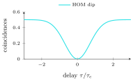

,
,  with , ; for 50:50 and one photon in each input,
with , ; for 50:50 and one photon in each input,  : the photons always leave together (HOM dip).
: the photons always leave together (HOM dip).Model
Unitarity of the mode transformation preserves . The unused port carries vacuum, which is why splitting a beam adds partition noise. Symmetric 50:50 choice: , .
Derivation of HOM
Invert: , (Hong et al. 1987). Then
The two amplitudes for "one photon in each output" (both transmitted, both reflected) cancel: . Distinguishable photons (delay ) give 50% coincidences; the dip has the width of the photon wave packet.Picture

Balanced homodyne detection
Mix the signal with a strong local oscillator  on a 50:50 splitter and subtract the photocurrents: , a quadrature of the signal; LO intensity noise cancels. This is how squeezing and coherent-receiver constellations are measured.
on a 50:50 splitter and subtract the photocurrents: , a quadrature of the signal; LO intensity noise cancels. This is how squeezing and coherent-receiver constellations are measured.
Worked example
Visibility for photons from two quantum dots means their indistinguishability . A delay stage scanned over  ps resolves a dip of width ps for 1 nm-bandwidth SPDC photons at 800 nm ( ps).
ps resolves a dip of width ps for 1 nm-bandwidth SPDC photons at 800 nm ( ps).
Engineering applications
Linear-optical quantum computing and boson sampling (networks of beam splitters on chips, see directional couplers and MZIs), Bell-state measurements in quantum repeaters, coherent optical receivers.
Pitfall
In the classical description the input field of the dark port can be ignored; quantum mechanically its vacuum fluctuations are what makes the beam-splitter output noisy and the transformation unitary.